Previous: Modern Forehand - Lag and Snap Or Lag and Stroke | 🏠 Classic Lessons Home | Next: My Mentor
My Journey With String
Comprehensive unified tennis knowledge base — Fundamentals, Stroke Analysis, Reference Library, and more
My Journey With String
By Geoff Williams
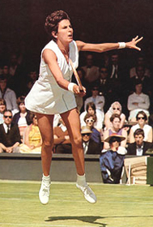
My journey with string goes back as far as Maria Bueno, the Brazilian Grand Slam champion from the 1960s.
For the last several years, there has been an explosion of new strings and new string combinations as part of the always evolving polyester revolution. So much has changed and continues to change that the average player can be befuddled by the range of options and claims.
String has fascinated me for decades, and over time I have probably tried as many configurations as anyone, including most of the newer polyester strings and some bizarre combinations of my own. In this article I want to sketch out some of the details of my personal journey with string. Then I want to suggest some guidelines and possible string combos for both power players and spin players at the club level.
A Little History
My first string job was piano wire, coated with rusty engine oil, in the mid 1960s! I saw Maria Bueno and Rod Laver play in Oakland California, so that should date me somewhat! That piano wire was ribbed, so that the ribs grabbed the ball, and created vicious spin. I was about ten years old and hitting spin like Nadal.
My first frame was an old Bancroft, purchased at Value Village, a Richmond, California thrift store located right next door to the emergency wing of Kaiser hospital. I remember how the outside air smelled like hospital drugs, pungent, and not exactly medicinal.
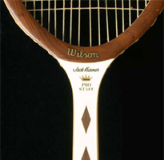
How many other players remember the Jack Kramer Pro Staff?
The balls we used were Slazengers, and they came in a four ball can, which you had to peel off sideways like an old sardine can. The key used to open it often broke, forcing me to use a can opener.
When that first string job finally broke, I had warped the frame beyond recognition. It was so worn down at the top from scraping the court that it finally cut the rusted out piano wire in half. What do you expect for fifty cents?
My next move was way up, to a Jack Kramer Prostaff frame with brown diamonds on the throat, and Leoina nylon string. The Leoina didn't last long, and it didn't hold tension very well either.
So after Leonia, I moved to gut. The gut I used back then was Victor Imperial Blue Streak, which you can still find strung up in some old frames owned by collectors. That was a superb and powerful string, and when it frayed or broke and the blue streak unraveled, you could see it was a ribbon imbued string, with the ribbon twisted inside the gut itself during manufacture.
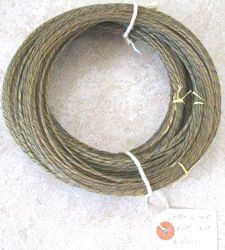
Victor Imperial gut: superb, powerful, ribbon imbued.
The gut retained its tension a lot better than the Leoina, and that qaulity is one reason why players such as Murray, Federer and Djokovic still do hybrids with VS team, the Ferrari of guts.
Bill Strei, at Plaza Tennis strung that first gut job for me, using a 1950's Oliver drop weight machine, which he still uses, three shop incarnations later. The older two point mounting machines like Bill allows him to actually "elongate" frames, although most players and many stringers aren't even aware of this effect. This slight change in the shape of the frame affects power and the shape of the sweet spot.
The truth is that stingers can elongate or compress frames by about 1/8" in either direction, based on the technique used, when they clamp the frame into the machine and how tightly, and also, which strings they string when and how tight.
A compressed or rounder frame affects power and feel as well. Rafael Nadal requests a rounder shorter frame on his string jobs. Nadal's frames are strung to be shorter by 1/8". Nadal also requests stringing from the bottom up, rather than top down, on the crosses.
To make the frame rounder stringers allow the mains to compress and round out the frame before fully locking it down. By pre-stressing and stretching the frame before locking it down on the stringing machine, the frame can be made less round and more oval. Tensioning the crosses differently, such as higher tension up at the top crosses, and lower on tension on the lower crosses, will also elongate the frame and shape the sweet spot.
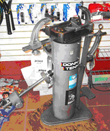
Bill Strei's drop weight stringing machine from the 1950s.
There are many other ways stringers can effect the characteristics of the string bed. They can use something called "proportional stringing" by varying the machine tensions of the longer lengths of strings in the middle of the frame versus the shorter lengths closer to the edges. This allows them to create the exact same actual tension for all the strings in the finished string jobs, no matter how long they are.
Some stringers do this by "pinging out" the mains on each corresponding side, so that they have the same sonic tone, like tuning a guitar. They then vary the tension to match tones on shorter lengths, to match the tone of the longer strings.
Decades of String
Since I first hit a ball, I've put in at least 10,000 hours on court, and had thousands of string jobs, many times cut out after just one hit. (I've also got my own stringer and like to experiment.)
Over the decades, I've used a huge range of different strings, guts, synthetic guts, ribbon, poly, copoly, Luxilon Alu Power, Big Banger Ace 18g, original Big Banger, Adrenaline Lux, Polyolefin Ribbon, Kevlar, and some stuff I can't even remember.
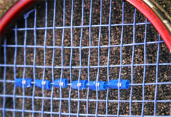
Drinking straw pieces under the cross strings: my most successful topspin experiment.
I also experiment with some very unusual combinations of my own: very thin fishing wire wrapped horizontally around the crosses; super glued crosses; zip cord copper lamp wire under the crosses; even electronic parts under the crosses; silicone spray on the strings; spaghetti string dual mains. (For more on Spaghetti Strings, Click Here.)
Most of these experiments have been made to produce more spin. My most successful spin experiment to date: short pieces of drinking straws placed under the crosses.
But enough about me and all that for now. It's probably fair to say I am far more interested in the esoteric aspects of string than most Tennisplayer readers. The more relevant question is this: what have I learned that can help you match a string configuration to your game?
So, to begin to understand this, let's go over some of the factors that go into creating power and also spin and see what role string plays (as well as the racket frame). Then I can make some stringing configuration recommendations based on your style that will have the potential to seriously impact what happens when you hit the tennis ball.
What role do frames and strings play in creating power?
Power
Power depends on several things. Generally, the stiffer a string is, the less power it has, due to less elasticity, less recoil, and less energy returned at impact. Lower string tension creates more power, allowing more energy and more of a trampoline effect on the ball. This will also create more depth.
The problem is, many low tension shots will go past the baseline if you are a hard hitter. This is the bane of the hard hitter--missing long due to tension loss after just a few hours. Softer hitters often like lower tensions, and can use strings that don't cost as much.
Softer strings such as gut will produce more power. But hardly any male pros use an all gut job, unlike the days of old, when all of them did!
The Gut Factory
Gut is made from cow intestines, starting with strands that are 42 feet long. (They say that the cows who eat a lot of stones make the best gut string.) It is made in liquid filled troughs, with workers who wear plastic gloves, and lab coats. Don't take my word for it, click on the video and see for yourself.
Click Here to see the amazing manufacturing process for natural gut.
Many string testers claim gut has the best feel/control/power/touch combination, so why don't more pros use it? With the increases in velocity in the modern game they cannot control it fully, nor can they depend on the same feel from set to set. Pros must believe absolutely in the equipment they use, and it takes many years of using the same equipment to create that stone cold belief.
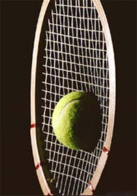
How does racket flex affect power and spin?
So they hybrid it, with polys or copolys to get the best of both worlds, controlled power and controlled depth, combining the feel of gut and the consistent snap back spin response of polyester.
Frames
It's important to note that the stiffness of the frame also affects the power. The ball impact causes the frame to wobble and vibrate after the ball is gone. Flexible frames wobble more, for a longer duration, with a lower rate of frequency compared to stiff frames. A stiffer frame wobbles less and imparts more energy and absorbs less.
For these reasons, stiff frames create a lower angle of trajectory. Flexible frames create a higher angle of trajectory due to a greater flex during impact. Heavier frames create more power as well, but only if they can be swung at the same speed, which is why most players now use lighter frames that allows to radically increase their swing speeds.
Does a more flexible frame create less spin? The greater flex absorbs more of the ball's energy, robbing some of the power and speed of shot that stiffer frames provide, but do they then add more spin? I don't know, if this is enough to affect the spin rate much at all.
Flexible frames do change the angle of trajectory though, increasing it somewhat, so it might seem that they do add more spin due to the higher angle and shorter depth they create. But I believe that the more flexible frames just make it appear that they create more spin due to the shorter, higher shots.
Lighter frames can be swung faster to generate more racket head speed.
Sweetspot
Even though players favor lighter rackets, they still often add lead tape. This is because lead tape can also change the shape and location of the sweet spot in the string bed.
Elongating or compressing the sweet spot is a science. Compression, creating a rounder sweetspot, occurs when lead is at 3 and 9 oclock. Elongation occurs when lead is up higher, such as 12 oclock or lower, such as in the handle or lower on the hoop.
We have seen in Josh Speckman's articles how poly string really works, through the "snap back" mechanism. (Click Here.) You get the same effect with a more open string pattern. This is because there is less friction on the mains due to a wider space in between mains and crosses in the impact zone, and this causes more snap back.
This configuration also causes more "sawing", and explains why a more open string pattern breaks string so much more quickly than the closed pattern, as the strings don't move as much, and so don't saw as much back and forth in a closed pattern as they do in an open pattern!
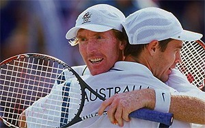
Open stringing patterns, as used by Mark Woodforde, also generate more spin.
It's important for players to understand that a stiffer frame or a stiffer string is harder on the arm, as are higher tensions. The higher tension creates a higher pitched resonant frequency, and your elbow vibrates faster with more force applied.
So those who use a stiff poly, strung tightly, on a stiff frame, will get hurt more often, unless they are immune to the harsher impacts.
Gut is also the softest string, more elastic, and will recoil more than poly, which affects the angle of trajectory off the string bed as well. Everything else being the same, gut will create a higher angle of trajectory, as it is softer and stretches more, with a greater recoil/impact/elastic rebound than poly, Kevlar, or most copolys. But even gut can hurt you if strung at high tension in a stiff frame.
No one thing controls power or any aspect of control/feel/touch. A low tension, stiff frame strung with gut produces so much power that no pro can control it, so no pro plays with that combination! Power in our game is worthless without control.
Spin equals control.
Spin
Spin is addictive, and some say, "Spin is control." All the top string experts talk about "snap back." Snap back occurs when the mains slide down as they grab the ball, and "snap back" into place as they impart spin/power/angle of trajectory/feel/control/depth to the ball. This happens in milliseconds. The ball only stays on the string bed for about 4 thousandths of a second. Everything the hand feels is transmitted in that very short time.
So why does it feel as the ball is one the strings a much longer time? Part of that is due to the "wobble" after impact, making the time seem as if it's a quarter of a second, and the resonant frequency of the frame used and the string used. Everything is vibrating at high frequency when the ball strikes the string.
Every frame, every string, and every string job has its own resonance, and its own frequency. This is what I think creates the illusion of extended impact times. And why it is so difficult to produce identical string jobs. As soon as the stringing is finished, the string starts to lose tension, due to the static tension of the job itself. Then it immediately begins to lose tension as you hit. So the tension of the string job is constantly dropping downwards.
VS Team gut is best at holding tension, and Ashaway Kevlar is among the worst. Ashaway does not stretch during stringing hardly at all, and VS does a great deal! Paradoxically, Ashaway feels very similar as it loses tension, and VS becomes a rocket launcher as it loses tension. String can be very strange.
3000 hits equals 12 seconds of actual dwell time!
Although the impact time of the ball varies slightly, it stays on the string bed in the range of about 3-5 milliseconds. Most people can't even blink more than three times in a second!
So, think about it, if you hit three thousand balls the actual time the ball was on string bed time is about 12 seconds total! Twelve seconds of contact on the string bed, out of three thousand shots.
That's amazing when you really think about it. It shows how little it takes to change the characteristics of particular string bed, and explains why pro players change frames so frequently.
Time Staggering
The hand has many thousands of nerve endings, and we learn to magnify the perception of those nerve endings, to "stagger" time so to speak. All top athletes are time "staggerers."
Great tennis players like great quarterbacks all stagger time.
They slow down time, and control the body's internal rhythm, to create the "grape fruit" effect. To them, the ball is moving slower and seems bigger, making it an easier target for them to attack.
The same goes for other athletes in other sports, such as football. Quarterbacks talk about "slowing down time" and how long it takes them to be able to do that. The quarterbacks only have a couple of seconds to find the receiver and lead him correctly before getting hit by gigantic muscled defensive players.
The same principle applies for top tennis players. They stagger time to deal with 140mph serves and 90mph forehands, all reaching them in a second or sometimes even less.
It is possible to focus our training/hitting sessions on our perceived impact extension. This also helps relax us during our shots, and causes less deceleration or braking, which is what you fell when the dreaded "lead arm" rears its head, a braking effect in the arm/body instead of a fluid, relaxed attacking shot.
It's called choking by most, but actually it's decelerated tension caused by rigidity in form. Ever notice how fluid and fast the best are under the worst pressure? They strike the ball faster and move more fluidly by will, by design, and by practiced and by very focused intention. Ask for power and ye shall receive power. Ask for spin and ye shall receive spin. Ask for fluidity and ye shall receive relaxed speed.
Do players believe they can control volleys on balls with 3000rpm?
Those who learn to place great spin on the ball give the rest of us great trouble, as the spin takes away our time, and our ability to "stagger" and slow down time. Some call it "action" on the ball. When you see it or feel it on your racket, you know it, let's put it that way.
And there is no doubt that the string revolution has been key disrupting the stagger effect--as well as causing the most successful players to take the ability stagger time to new levels.
No doubt string and spin have played a big part in reducing net attack--in part by affecting players' confidence that they can control a ball spinning at 3000rpm with a volley motion--especially if that ball is down at their shoes. So, yes, I believe string has definitely affected the mental dimensions of the game.
Spaghetti jobs were invented to create more spin. They were outlawed after Illie Nastase beat up on a few guys like Vilas. What would Nadal play like with a spaghetti job? Would he be unplayable? Good question that probably will never be answered--although Federer once practiced with spaghetti strings!
Why is Andy Murray interested in spin rates?
Some say, "Higher string tension creates more spin." But the effect probably is an illusion. A higher tension affects the angle of trajectory, and does not impart as much force/velocity to the ball, and has less elasticity/recoil, so the ball drops shorter into the court and fewer balls go out long.
How important is spin in the minds of the top players? Maybe more than we think.
Andy Murray actually called television commentator Chris Fowler after Fowler mentioned John Yandell's study of forehand spin for Roger, Rafa and Novak. Murray wanted to know if John had measured his forehand spin. (And the answer is now less--Murray hits with somewhat less spin than either Federer or Djokovic.)
So why does Andy Murray care about the science of spin enough to make that call? He wants to see if his rpms match up to the guys who are beating him, that's why. Some of the pros think spin is more important than power.
Club Power
So after all that, here are my recommendations about where to start in searching for your own ideal string combinations. First, for the club player who considers himself a power player I recommend starting with a relatively stiffer frame such as the Wilson KBlade 98, or a medium stiff Babolat frame.
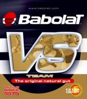
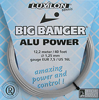
The Premium combination for power players: Babolat VS and Alu.
I recommend this frame be strung with VS Team natural gut mains, and Luxilon Big Banger Alu 1.25mm (Alu only comes in 1.25mm) as the crosses. It's the premium choice and should be strung at a higher tension that allows control of the gut mains. Somewhere in the 58lbs-64lbs range, in a 98 sq. in frame.
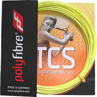
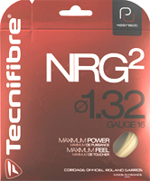
A second club power choice: Poly Fibre High Tech and Technifibre NRG2
Make it lower with a smaller 90-95 sq. in. frame, or way higher in an oversize frame, with the Alu crosses a few lbs. lower. This will allow the gut mains can snap back and grab more just they do for Federer and Djokovic.
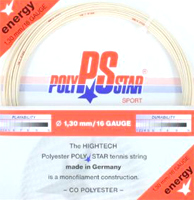
PolyStar has better feel at the net than most polys.
Here is a second choice for club power players. For the mains: Poly Fibre poly hi-tech 1.25mm (thicker strings have more power and less stretched out trampoline vs. the 1.20mm version) at 55lbs-60lb range and for the crosses, Technifibre NRG2 crosses strung a few lbs lower.
I also have a third single brand poly option for you: Poly Star Energy 16g, a soft poly with great power. I think this string also has better feel at net at the net compared to most other poly string. String it in the 52-60lbs range.
Club Spin
Here are my recommendations for club players who consider themselves spin players.
First, I recommend open patterns and stiffer frames, like Babolats with 16 x 19 patterns. Now string the mains with Tourna Big Hitter Blue Rough Twisted. Cross this with Luxilon Big Banger original rough.
The tension range can be higher without injury, due to the softness of this combination. Try anywhere between 58-69lbs in a 98 square inch frame, and up to 10 lbs higher in an oversize frame. Wow, is what you are going to say when you feel how you can work the ball with this combo.
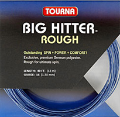
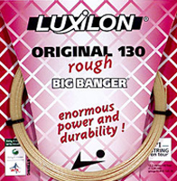
The club spin first choice: Tourna Big Hitter with original Big Banger.
Here's a second club spin combination. For the mains: Pro Supex Blue Gear Ultra (a stiffer twisted string, so watch it, as it could hurt you if you have arm issues). Cross this with Technifibre NRG2. I suggest lower tension here: 49-53lbs.
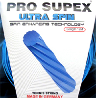
Second spin option: Pro Supex Blue, crossed with NRG2.
And my third suggestion: Solinco Tour Bite or Barb Wire twisted string for the mains crossed with Alu power. String in in the 53-65 lb range. You'll get excellent soft pocketed spin/power, but, a warning, the tension loss sucks.
These are just a tiny sampling of the possible combinations, but represent a great place to start. There are 12 different root words for snow in Inuit, and innumerable permutations of those roots. Similarly, in our game, control/feel/touch/playability, are all close to each other, like those 12 Inuit root words are for snow.
Yet, it's all just ice falling from the sky. They are just words. Every snow flake is actually different; as is every shot you ever make, and every frame you ever use, and every string job you ever hit with!
To match all those variables to your playing style is the real art of the stringer, and is the great desire of all pros. But I do believe the stringer has to see you hit before he can maximize what he can do for you.
And you as the player have to know if you prefer flex and feel or spin, over power and penetration. The true artist can create a string job that feels virtually the same every time, and give you a maximum hybrid of control and feel and power.
Those who learn to match the frequencies of the frame/string/tension to fit the amplitude of their games have a healthier and happier time on the court. When the string/frame/tension feels perfect, so do you.
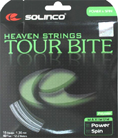
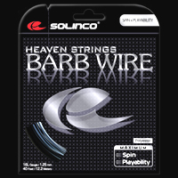
Two more options: Solinco Tour Bite or Barb Wire, crossed with Alu power.
My true desire is to see you create the best string job you have ever had, as a result of reading this article!

Geoff Williams grew up playing tennis in his hometown of Richmond, California, winning his first and only junior tournament at age 11. Over the years he went on to become a fixture on the Northern California NTRP tournament scene, winning numerous titles at both the 4.5 and 5.0 levels. He accomplished this with a self-taught style, shunning lessons. His recent return to glory was inspired in part by his intensive study of Tennisplayer.net.
He claims with a straight face to have read literally every article on the site. An electrical contractor by profession, Geoff lives in the East Bay with his wife Ronda. Want to swap stories with Geoff or talk Gear Head talk? Email him: bestelectrician@sbcglobal.net
Source: tennisplayer.net archive — My Journey With String.docx (John Yandell teaching library, 2002-2022). Extracted and rendered as HTML for Tennis Future Lab.